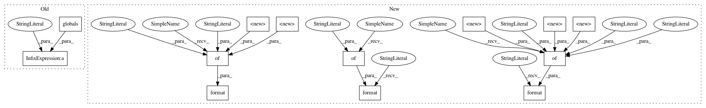

bbe15496db3bd99d8795630056734f55775e47fb,cellprofiler/modules/measureimagequality.py,MeasureImageQuality,add_threshold_group,#MeasureImageQuality#Any#Any#,381
Before Change
group.append("assign_middle_to_foreground", cps.Choice(
"Assign pixels in the middle intensity class to the foreground or the background?",
[O_FOREGROUND, O_BACKGROUND], doc=\
*(Used only if thresholds are calculated and the %(TM_OTSU)s
thresholding method with %(O_THREE_CLASS)s is used)*
Choose whether you want the middle grayscale intensities to be assigned
to the foreground pixels or the background pixels. % globals()))
group.can_remove = can_remove
if can_remove and image_group is not None:
After Change
value=0.1,
minval=0,
maxval=1,
doc=\
*(Used only if thresholds are calculated and {TM_MOG} thresholding is
chosen)*
Enter the approximate fraction of the typical image in the set that is
covered by objects.
.format(**{
"TM_MOG": centrosome.threshold.TM_MOG
}
)
))
group.append("two_class_otsu", cellprofiler.setting.Choice(
text="Two-class or three-class thresholding?",
choices=[identify.O_TWO_CLASS, identify.O_THREE_CLASS],
doc=\
*(Used only if thresholds are calculated and the {TM_OTSU}
thresholding method is used)*
Select *{O_TWO_CLASS}* if the grayscale levels are readily
distinguishable into foreground (i.e., objects) and background. Select
*{O_THREE_CLASS}* if there is a middle set of grayscale levels
that belongs to neither the foreground nor background.
For example, three-class thresholding may be useful for images in which
you have nuclear staining along with a low-intensity non-specific cell
staining. Where two-class thresholding might incorrectly assign this
intermediate staining to the nuclei objects, three-class thresholding
allows you to assign it to the foreground or background as desired.
However, in extreme cases where either there are almost no objects or
the entire field of view is covered with objects, three-class
thresholding may perform worse than two-class.
.format(**{
"TM_OTSU": centrosome.threshold.TM_OTSU,
"O_TWO_CLASS": identify.O_TWO_CLASS,
"O_THREE_CLASS": identify.O_THREE_CLASS
}
)
))
group.append("use_weighted_variance", cellprofiler.setting.Choice(
text="Minimize the weighted variance or the entropy?",
choices=[identify.O_WEIGHTED_VARIANCE, identify.O_ENTROPY],
doc=\
Choose whether to minimize the weighted variance or the entropy when selecting
the threshold.))
group.append("assign_middle_to_foreground", cellprofiler.setting.Choice(
text="Assign pixels in the middle intensity class to the foreground or the background?",
choices=[identify.O_FOREGROUND, identify.O_BACKGROUND],
doc=\
*(Used only if thresholds are calculated and the {TM_OTSU}
thresholding method with {O_THREE_CLASS} is used)*
Choose whether you want the middle grayscale intensities to be assigned
to the foreground pixels or the background pixels.
.format(**{
"TM_OTSU": centrosome.threshold.TM_OTSU,
"O_THREE_CLASS": identify.O_THREE_CLASS
}
)
))
group.can_remove = can_remove
if can_remove and image_group is not None:
In pattern: SUPERPATTERN
Frequency: 3
Non-data size: 13
Instances
Project Name: CellProfiler/CellProfiler
Commit Name: bbe15496db3bd99d8795630056734f55775e47fb
Time: 2018-02-08
Author: bowdenm@spu.edu
File Name: cellprofiler/modules/measureimagequality.py
Class Name: MeasureImageQuality
Method Name: add_threshold_group
Project Name: CellProfiler/CellProfiler
Commit Name: bbe15496db3bd99d8795630056734f55775e47fb
Time: 2018-02-08
Author: bowdenm@spu.edu
File Name: cellprofiler/modules/measureimagequality.py
Class Name: MeasureImageQuality
Method Name: add_threshold_group
Project Name: CellProfiler/CellProfiler
Commit Name: bbe15496db3bd99d8795630056734f55775e47fb
Time: 2018-02-08
Author: bowdenm@spu.edu
File Name: cellprofiler/modules/measureimagequality.py
Class Name: MeasureImageQuality
Method Name: add_image_group
Project Name: CellProfiler/CellProfiler
Commit Name: c78624de176d205165eda75a883ed4ff824c812d
Time: 2017-09-15
Author: mcquin@broadinstitute.org
File Name: cellprofiler/modules/loadsingleimage.py
Class Name: LoadSingleImage
Method Name: add_file